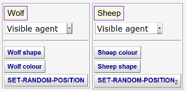
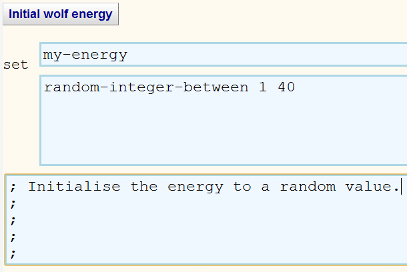

Guide to Modelling Predators-Prey Ecosystems
Here we describe how to build a model of a simple ecosystem consisting of
predators, prey, and plants using the
BehaviourComposer.
This document has links to all the micro-behaviours needed to construct the
model. Additional behaviours are needed for building variants and enhancements.
They can be found in the full library of
micro-behaviours.
Step 1. Create a prototypical predator
- Rename Prototype1 to Wolf (or
your favourite predator). Click on Composer Area
to go to the area containing Prototype1. Rename it by clicking on
the button labelled Prototype1. After doing that return here by
clicking on the Resources Area at the top of
the screen.
- To set the shape of the wolf prototype go to the
SET-SHAPE micro-behaviour. Replace 'fish' with one of the supported shapes (e.g.
'wolf 2' -- note that the space between the 'f' and the '2' is required). Click on the 'SET-SHAPE' micro-behaviour button and from the menu
select Rename. Edit the name to something more informative such as
SET-WOLF-SHAPE and click Save. Click on the
renamed behaviour button to Add
it to your prototype.
- Open SET-COLOR
and edit the colour. Rename the behaviour to
something more informative such as SET-WOLF-COLOR.
Add it to your prototype.
- Click on the Run button in the
Composer Area. A new window or tab will
appear. Click on Setup to see your predator.
- (Optionally you may wish to use SET-SIZE to
make the appearance of your prey larger.)
Step 2. Create a prototypical prey
- Click on New Prototype in the the
Composer Area.
Rename Prototype2 to Sheep (or if you pick a different
name then use that name later in the
EAT-A-SHEEP-ONCE
and
ADD-SHEEP-TO-PLOT
micro-behaviours).
- Repeat step 1.2 with a different shape.
- Repeat step 1.3.
- Run your model in the
Composer Area.
- The location of the prototypes wasn't specified so they both begin in
the centre on top of each other. Add
SET-RANDOM-POSITION to both to fix
this.
- Run your model in the
Composer Area.
You should end up with your Composer Build tab looking something like this:
Step 3. Create an environment
Depending upon the colours and shapes you chose the agents may be hard to
see. Later we will model a renewable resource such as grass but for now just use
SET-BACKGROUND-COLOR to provide a good
background colour. Add it to a
New Prototype and Rename
it 'World', 'Environment', or the like. Add HIDE
to your world prototype so you don't see its default
shape when running your model.
Step 4. Make the predators and prey move
We are planning on having interactions between agents occur when they occupy
the same space. At least one kind of agent needs to move to enable these
interactions. They could move in a goal-directed manner but for simplicity we
will make them all wander randomly.
- Add
WANDER-RANDOMLY-BY-TURNING to
both of your prototypes. With this behaviour they will turn randomly and
move forward a constant amount each time step. (Optionally you can experiment
with other movement behaviours.)
- Run your model in the
Composer Area. Within the simulation
applet you will see a 'switch' labelled
clocked. If you toggle it to off then the applet will
run as fast as possible.
Step 5. Make many predators and prey
We need an initial population of predators and prey.
- Open ADD-COPIES
and edit the 9 to the number of additional predators (in addition to the
prototypical predator). Rename the behaviour to
something like ADD-INITIAL-WOLVES. (Optionally you can use
DEFINE-PARAMETER to define a parameter
that specifies the number of predators to ease experimentation. Then replace
the 9 with your parameter minus one.)
- Repeat for the prey prototype.
- Run your model in the
Composer Area.
Step 6. Model the eating of prey by predators
To model predation we will have each predator eat one of they prey at the
same patch of the environment (if there is one). For simplicity we will have the
predators do this on every tick of the simulated clock. If we think of patches
as fairly large and clock ticks as several days this isn't so unrealistic. We
will model eating as the death of the prey and later will model the acquisition
of energy as the result of eating.
- We have already constructed an
EAT-A-SHEEP-ONCE
micro-behaviour by customising a copy of
INTERACT-WITH-ANOTHER to
randomly pick a prey at the patch the predator is occupying and if there is
one to add the DIE behaviour to it.
- To cause the predators to repeatedly eat prey open
REPEATEDLY-DO-BEHAVIOURS, click
on
EAT-A-SHEEP-ONCE and select the Add to a List
menu item, and navigate back to
REPEATEDLY-DO-BEHAVIOURS, and add it to the 'Behaviours'. It should look
like this:
- Rename REPEATEDLY-DO-BEHAVIOURS to
EAT-SHEEP or the like. Add your behaviour to
the predator.
- Run your model in the
Composer Area. We have a problem. Because
the ADD-INITIAL-WOLVES is run before the EAT-SHEEP behaviour is added the
wolf copies don't have the EAT-SHEEP behaviour -- only the original
prototypical wolf does. To fix this click on EAT-SHEEP and select
Move Up. Run your model
again in the
Composer Area.
Step 7. Model energy collection and consumption
We can model energy by introducing an attribute of each predator that is the
amount of energy it has. Predators lose energy each time step and gain energy when eating some prey.
We will start the model with the energy of predators uniformly distributed.
- Customise and rename
UPDATE-ATTRIBUTE so that the first text boxes defines an attribute named 'my-energy'. (The
BehaviourComposer automates the task of declaring attributes if their name
begins with "my-".) Add it to the predator prototype and the list of of
Additional Behaviours in the behaviour that
produces many copies of the predator prototype. To give predators different
amounts of initial energy the initial value can be an expression such as
random-integer-between 1 40. Alternatively, you can specify a parameter
using
DEFINE-PARAMETER so the 40 can be
changed at run time. It should look something like this:

- Customise and rename
UPDATE-ATTRIBUTE-REPEATEDLY
so that my-energy is set to my-energy - 1. (Note that NetLogo
requires spaces on both sides of the minus sign.) Add it to the predator
prototype. Move this behaviour so it is before the
ADD-INITIAL-WOLVES behaviour. It should look like this:
- Customise and rename
UPDATE-ATTRIBUTE again. Specify that my-energy is set to
my-energy + 20. Add this micro-behaviour to the
'My Additional Behaviours' list in the
EAT-A-SHEEP-ONCE behaviour.
-
DIE-WHEN-NO-ENERGY was created by customising
WHENEVER. Add it to
the predator prototype.
Move this behaviour so it is before the ADD-INITIAL-WOLVES behaviour.
- Run your model in the
Composer Area. Can any predators survive?
Can any prey?
Step 8. Draw population graphs as the model unfolds
- First to create an empty graph we add to
CREATE-EMPTY-POPULATIONS-PLOT to a
new prototype
renamed to Observer or the like.
Add HIDE to the
prototype so you don't see it in the model animation.
- Add
ADD-WOLVES-TO-PLOT and
ADD-SHEEP-TO-PLOT to the Observer prototype.
- Run your model in the
Composer Area.
Step 9. Model predator reproduction
A very simple way to model reproduction is that each individual reproduces
with some odds on each time step. For many purposes of studying predators and
prey there is no need to model gender, sexual maturity, and sexual encounters.
- Open
DO-WITH-PROBABILITY, edit the probability field, and
rename to something like WOLF-REPRODUCE-ONCE . We will
split the energy between the parent and offspring. To do so
customise, and rename
UPDATE-ATTRIBUTE again. Specify that my-energy is set to
my-energy / 2. Add this behaviour to the Behaviours list on
WOLF-REPRODUCE-ONCE. Open ADD-COPIES
and change the 9 to 1. Rename the behaviour to
something like ADD-A-WOLF. Add it to the the Behaviours list on
WOLF-REPRODUCE-ONCE. It is important the energy is halved before the agent
is copied so that the copy also gets half the energy.
- Open
REPEATEDLY-DO-BEHAVIOURS,
rename it to WOLF-REPRODUCE, add
WOLF-REPRODUCE-ONCE its list of behaviours. Add
WOLF-REPRODUCE to the predator prototype.
- Run your model in the
Composer Area.
Step 10. Model prey reproduction
Do the same as step 9 possibly with a different probability or parameter. You
can reuse the behaviour for splitting the energy.
Step 11. Model vegetation
We can introduce plants that the prey eats. After being eaten plants
replenish themselves after a delay.
- Create a new prototype called Grass and
add
MAKE-GRASS to it. This creates one grass agent for each patch of the
world.
- Because grass doesn't move we will display it by setting the colour of
the underlying patch. Add
GRASS-IS-ZERO-SIZE to the prototype. Move it before the MAKE-GRASS
behaviour so that all grass agents have zero size.
- To spread the grass out one per patch add
LAYOUT-GRASS-AFTER-SETUP to the prototype that sets the grass green.
(If you were to add this to the grass prototype then this would be run
hundreds of times -- once for each grass agent.)
- Add
EAT-GRASS to your prey prototype. This repeatedly eats any green grass
that is in the same patch as the prey. Eating entails gaining energy,
setting the grass brown, and scheduling its recovery.
- Add
DIE-WHEN-NO-ENERGY
to the prey prototype. Make sure that the ADD-SHEEP micro-behaviour is last
so that these micro-behaviours are added to all the prey.
- Add
ADD-GRASS-TO-PLOT to the Observer prototype to graph the amount of green
grass (divided by 4 to have comparable scales).
- Run your model in the
Composer Area. Compare the fluctuations
of the predator and prey with and without plants.
Step 12. Help us improve this course
Please fill in this
short questionnaire.
This guide was inspired by the
NetLogo Wolf Sheep Predation model. It runs significantly faster than the
model constructed here. You may wish to experiment with it.
Here is a
sample model that adds sliders for several of the parameters of this model
for easy experimentation.